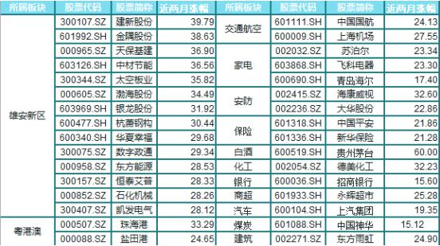

当前行情究竟有多惨
一组数据说明一切。
1、共计1308只个股股价跌破股灾后的上证指数最低点2638点的位置。
2、共计1922只个股今年以来的跌幅大于10%，1302只个股跌幅大于20%，670只个股跌幅大于30%。涨幅大于10%的，不到500只。
3、近两个月共计2100只个股跌幅大于10%，1267只个股跌幅大于20%，487只个股跌幅大于30%，而涨幅大于10%的，仅235只。
但是真的赚不到钱吗？
虽然行情这么惨淡，可能你的股票连续下跌，但是真的就没有办法赚钱了吗？有些个股却逆势高飞，一路稳健上涨，这些稳健上涨的个股，就是所谓一九行情中的一。有的人抓到了一，就是赚到钱了的。
如果你买到的是上面这些票，一定是赚钱的！
为何会走出一九行情？
原因一：新股连续发。供求失衡，市场资金有限，无法承受如此多的新股。自2001年以来，2010年最多，达348家，2016年为227家，今年时间未过半，新股发行数量已经达210家，按照这个速度，新股发行将创记录。另外，IPO排队还剩下579家，每个月发42家，自然增长13家，要把剩下的发完，还需要20个月。
原因二：估值修复。A股市场存在大量的高估值个股，且大量集中在中小板，刘士余主席上任后，大力提倡价值投资，压制市场炒作，严格监管市场行为，使得市场的投资风格转向低估值价值蓝筹股。高估值中小股向下修复，低估值蓝筹股向上修复。
原因三：国家队护盘。金融市场必须稳定发展，在中小个股持续下跌的情况下，为了保证股指不那么难看，稳定人心，国家队资金连续拉抬蓝筹权重个股，以达到维持股市稳定的目的。
原因四：资金抱团。一旦一个版块开始出现赚钱效应，而其它板块缺失赚钱效应的时候，市场资金会被迫转移到具有赚钱效应的板块。这就是趋势效应，不仅仅体现在K线图上，也体现在资金的流动性上。
究竟该怎样赚钱
赚到钱，绝非运气。
这种行情下，如何才能拥抱一，远离九，一眼辨牛熊，做股市赢家？
且先看一九行情中一的这些具有代表性的个股。
【301318中国平安】
【600519贵州茅台】
【002236大华股份】
【601398工商银行】
发现共同点了吗？
共同点：1、优质蓝筹股；2、总体趋势向上，趋势为牛市；3、黄线穿过白线线后的金黄色区域为主升区域。
重点：趋势向上，金黄色主升区域
是的，就是这么简单！大家细心看，下跌的票都是趋势向下的，而上涨的票都是趋势向上的。如果只做趋势向上主升浪的票，那么你就会避开一切趋势向下的票，有效的避免亏损，获取盈利。
万事万物皆有惯性与转折，股价也不例外。趋势线表明当股价向其固定方向移动时，它非常有可能沿着这条线继续移动。惯性即趋势，把握趋势，就可以相当概率的预测未来，预测到未来，便可以从中获利。
如何把握向上趋势，只做主升浪
股市实战一哥崔老，独家研发《趋势战法》，深入简出，化繁为简，更精准，更直观，更好用，更实用的帮助大家把握住向上趋势，教大家只做主升浪。
个股实战狙击，直接给出【行情启动、进入主升浪】个股！
提示个股牛熊走势分界点位！个股面临调整，提早预告下跌风险！
不定期特别推荐可操作【起爆牛股】！
多维度分析计算，给出有效帮助群内朋友做T策略，简单直接，买入卖出一目了然。
吃一堑长一智，如果之前，你还不懂得只做主升浪，不知道怎样做主升浪，那么经历了这段严酷的行情之后，现在，应该毫不犹疑的只做主升浪，跟崔老实战交流，学到的一定不会少！回想起来，牛市熊市，总不缺赚钱的人，不是市场不行，是你手里的股票不给力！很多时候，亏损与盈利，只在一念之间！进群丰富自己的操作，就是明智之选！
为辅助趋势战法完美传教，崔老内部学员交流群全面开放
| 首批开放名额仅限366席， 6月28日24:00正式关闭通道！
群号： 264354282 验证码：3678